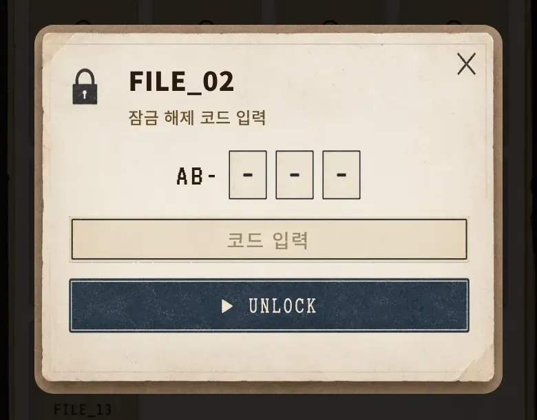

안녕하세요, 문서 N07-013 수사 요원님.
성공적인 수사를 위한 안내사항을 전달드립니다.
출발 전, 꼭 확인해주세요!
STEP 1
플레이 정보
CASE INFO · N07-013
📍
서울 마포구 홍대·연남 일대경의선숲길 주변 야외
⏱️
👟
👤
📱
스마트폰 1대로 진행앱 설치 없이 인터넷 브라우저에서 플레이
🔒
잠긴 파일 13개 + 숨겨진 파일
실제 거리를 걸으며 단서를 찾고, 암호를 풀어 파일을 하나씩 여는 야외 방탈출이에요.
STEP 2
준비물 챙기기
계속 걸으면서 휴대폰을 보는 게임이에요.
원활한 수사를 위해 준비해주세요.
- 충전된 휴대폰 + 보조배터리화면을 계속 켜고 이동해요
- 모바일 데이터와이파이 없이 야외에서 접속해요
- 이어폰음성 기록을 길에서 듣기 편해요
- 편한 신발과 가벼운 짐
- 밝은 시간대작은 글씨·그림을 찾아야 해서 어두우면 어려워요
STEP 3
시작 장소로 이동
START POINT홍대입구역 3번 출구
- 시작 장소에 도착하면 게임에 접속해요.크롬 또는 사파리 브라우저를 추천해요.
- 로딩이 100%가 되면 [수사 시작]을 눌러요.
- 짧은 오프닝 이야기가 나와요.화면을 탭하면 다음 장면으로 넘어가요.
STEP 4
첫 화면은 프로필 화면이에요

1
2
3
- 1미션이번 수사의 최종 목표예요.
- 2메시지다른 요원과 주고받는 메시지예요. 나중에 답장할 일이 생겨요.
- 3MY STORAGE 열람문제(파일)는 전부 여기 들어 있어요. 이 버튼을 눌러 시작!
STEP 5
FILE_01부터 시작하세요

1
2
- 1FILE_01 — 여기서부터!처음엔 이 파일만 열려 있어요. 눌러서 읽어보세요.
- 2잠긴 파일앞 파일을 풀어야 열려요. 순서대로만 열 수 있어요.
⚠️“이전 파일을 먼저 해제하세요”가 뜨면, 가장 최근에 연 파일의 바로 다음 파일을 눌러주세요.
STEP 6
문제 푸는 방법
모든 파일이 같은 방식으로 반복돼요.
01열린 파일 읽기노란 형광펜이 핵심 단서예요
02현장으로 이동파일 속 장소를 찾아가요
03현장에서 답 찾기표지판·조형물·벽화 속에 답이 있어요
04다음 파일에 답 입력그 답이 다음 파일의 잠금 코드예요
↻ 새로 열린 파일로 다시 01부터
STEP 7
잠금 코드 입력
MY STORAGE로 돌아가 다음 잠긴 파일을 누르면 입력창이 떠요.

1
2
- 1칸 수 = 입력할 글자 수AB-처럼 이미 적힌 부분은 빼고 나머지만 입력해요.
- 2입력 후 [UNLOCK]영어는 대문자·소문자 상관없어요.
STEP 8
막히면 💡 힌트, 길은 🗺️ 지도
파일을 열면 화면 오른쪽 아래에 💡 버튼이 생겨요.

1
2
- 1지도 아이콘힌트 창 오른쪽 위. 이 파일의 장소 지도가 열려요. 지도는 여기에만 있어요.
- 2[열기]힌트가 한 단계씩 열려요. 끝까지 열면 정답과 해설도 볼 수 있어요.
💡힌트는 지금 열어 둔 파일의 문제에 대한 거예요. FILE_01은 지도가 없으니 시작 장소 주변에서 사진 속 장소를 찾아보세요.
STEP 9
이런 기능도 있어요
💬메시지 답장파일에서 메시지를 보내라고 하면, 프로필 화면 → 해당 메시지 → 맨 아래 입력창에 답을 보내요.
 현장분석 카메라MY STORAGE 왼쪽 아래 빨간 버튼. 파일에서 쓰라고 할 때만 사용하고, 카메라 권한은 ‘허용’해주세요.
현장분석 카메라MY STORAGE 왼쪽 아래 빨간 버튼. 파일에서 쓰라고 할 때만 사용하고, 카메라 권한은 ‘허용’해주세요.📋최종보고서MY STORAGE 아래 [최종보고서 열람]. 알아낸 정보를 미리 적고 임시저장할 수 있어요.
🎧음성 기록들을 수 없는 상황이면 [스크립트 보기]로 글로 읽을 수 있어요.
STEP 10
주의사항
- 새로고침·창 닫기 금지진행 상황이 사라질 수 있어요. 뒤로 갈 땐 게임 화면 왼쪽 위 ←를 눌러주세요.
- 걸을 땐 화면 보지 않기차도·골목에서는 멈춰서 확인해주세요.
- 주변에 피해 주지 않기가게·주택가 근처 장소가 있어요. 시설물은 만지거나 떼지 말고, 큰 소리는 삼가주세요.
- 정답은 현장에 있어요검색보다 주변을 천천히 둘러보세요.
FINAL
수사 개시
- 홍대입구역 3번 출구로 이동해요.
- 아래 버튼으로 게임에 접속해요.
- 프로필 화면 → [MY STORAGE 열람] → FILE_01부터!
“기록을 끝까지 따라가라.
진실은 그 끝에 있다.”